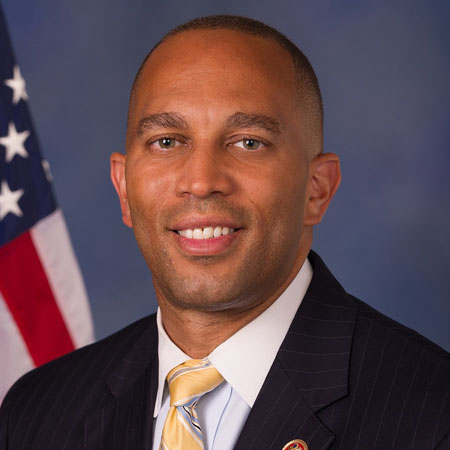

<div class="container">
	<div class="row">
        <div id="speaker-detail" class="col-lg-10 col-lg-offset-1">
            <div class="row">
            	<button title="Close (Esc)" type="button" class="mfp-close">×</button>
                
                <div class="col-md-5 col-lg-5 no-padding">
                    
                </div>
                    
                <div class="col-md-7 col-lg-7">
                    <h2>Hakeem <span>Jeffries</span></h2>
                    <p class="lead">U.S. Representative</p>
                    <!--
                    <ul class="social list-inline list-unstyled">
                    	<li><a href=""><i class="fa fa-2x fa-facebook-square"></i></a></li>
                        <li><a href=""><i class="fa fa-2x fa-twitter-square"></i></a></li>
                        <li><a href=""><i class="fa fa-2x fa-google-plus-square"></i></a></li>
                        <li><a href=""><i class="fa fa-2x fa-linkedin-square"></i></a></li>
                    </ul>
                    -->
                    
                    <div id="content">
                    	<p>Hakeem Jeffries represents the diverse Eighth Congressional District of New York, an area that encompasses large parts of Brooklyn and a section of Queens. Serving his fourth term in the United States Congress, Rep. Jeffries is a member of the House Judiciary Committee and House Budget Committee.</p>

<p>Rep. Jeffries is Chairman of the House Democratic Caucus, having been elected to that position by his colleagues in November 2018. In that capacity, he is the fifth highest-ranking Democrat in the House of Representatives.  He is also the former Whip of the Congressional Black Caucus and previously co-chaired the Democratic Policy and Communications Committee where he helped develop the For The People agenda.</p>

<p>In Congress, Rep. Jeffries has emerged as a tireless advocate for social and economic justice. He has worked hard to help residents impacted by the devastation of Superstorm Sandy, reform our criminal justice system, improve the economy for everyday Americans and protect our health care from right-wing attacks.</p>

<p>Rep. Jeffries begins each year determined to move forward in a bipartisan manner. In the 115th Congress, Rep. Jeffries worked across the aisle as the lead Democratic sponsor of the FIRST STEP Act (S. 756, Public Law No. 115-391), a strong, bipartisan criminal justice reform bill. The legislation initially passed the House 360-59, and is now law. The FIRST STEP Act will transform lives by providing access to the mental health counseling, education, vocational services and substance abuse treatment needed to help incarcerated individuals get back on their feet and have a second chance. Rep. Jeffries partnered with Congressman Doug Collins, a conservative Republican from rural Georgia, on the legislation, which is widely viewed as the most meaningful criminal justice reform effort in a generation.</p>

<p>The FIRST STEP Act also provides retroactive relief for the shameful crack cocaine sentencing disparity that unfairly destroyed lives, families and communities. The law shortens sentences by ensuring inmates can earn the 54 days of good time credit per year Congress intended and applies the change retroactively, to the benefit of thousands of currently incarcerated mothers, fathers, daughters and sons. It provides $375 million over the next five years to expand re-entry programming, including education and vocational training, which is proven to dramatically reduce recidivism and help prepare for a successful transition back into society. In order to strengthen and preserve family relationships, the bill requires the Bureau of Prisons to house incarcerated individuals within 500 driving miles of their relatives and permits the transfer of lower-risk inmates to home confinement. In addition, the FIRST STEP Act bans the immoral practice of shackling women throughout the duration of their pregnancy, during childbirth and for three months post-partum.</p>

<p>Rep. Jeffries also played a key role in the House passage of the historic Music Modernization Act (MMA) (H.R. 5447, Public Law No. 115-264), which became law in 2018. Heralded as a sweeping update to our copyright laws, the MMA will improve the licensing process so that songwriters, artists and musicians can continue to share their creativity with the world. Because of the MMA, songwriters are more likely to get paid a fair price for their work, and digital music providers like Spotify and Pandora will be able to operate more efficiently. In an era of crisis and dysfunction in Washington, the power of music brought Democrats and Republicans in Congress together to collaborate on groundbreaking legislation, ushering our music copyright system into the 21st Century.</p>

<p>In April of 2018, the President signed the Rep. Jeffries-authored Keep America’s Refuges Operational Act (H.R. 3979, Public Law No. 115-1689) into law. Each year, 47 million Americans visit wildlife refuges, generating almost $2 billion in local economic activity. This law will keep America’s refuges operational by supporting the volunteers who dedicate thousands of hours to maintain our public lands. Passage of this bill was part of a bipartisan, bicameral effort to ensure Americans can visit, explore and study wildlife and experience our nation’s vast natural beauty for generations to come.</p>

<p>Several other pieces of Rep. Jeffries-authored legislation passed the House of Representatives in the 115th Congress, including bills to investigate the public health impact of synthetic drug use by teenagers (H.R. 449, Public Law No. 115-271) and updating federal regulations to remove racially offensive terminology from use (H.R. 995). Rep. Jeffries’ H.R. 3229 (Public Law No. 95-521), which helps protect judicial officers from threats, harm and harassment by those who would seek to compromise the integrity of our judicial branch, also passed the House in 2017, and was signed into law in March 2018. Additionally, Rep. Jeffries authored H.R. 3370 (Public Law No. 95-921), the Fry Scholarship Enhancement Act, which became law as part of the Harry W. Colmery Veterans Educational Assistance Act of 2017. It will expand the availability of education benefits to the children and spouses of service members killed in the line of duty.</p>

<p>In the 114th Congress, Rep. Jeffries teamed up with Congressman Peter King to pass the Slain Officer Family Support Act of 2015 (H.R. 1508, Public Law No. 113-227), which President Obama signed into law. That law extended the tax deadline so that individuals making charitable donations to organizations supporting the families of assassinated New York Police Department (NYPD) Detectives Wenjian Liu and Rafael Ramos, could apply such tax deductions to the prior year’s tax return</p>

<p>On the heels of a nationwide outcry demanding meaningful police reform, Rep. Jeffries introduced the Excessive Use of Force Prevention Act of 2015 (H.R. 2052), legislation that would make the deployment of a chokehold unlawful under federal civil rights law. The chokehold has been banned by the New York Police Department for more than twenty years and prohibited or discouraged by several major police departments throughout the country. Yet, it continues to be used by law enforcement, as in the death of Eric Garner. Rep. Jeffries reintroduced that legislation in 2018, and continues to look for ways to protect our communities from police brutality.</p>

<p>In the 113th Congress, Rep. Jeffries successfully passed H.R. 5108 (Public Law No. 113-227), legislation that established the Law School Clinic Certification Program of the United States Patent and Trademark Office (USPTO) into law. This program had been operating in a pilot capacity since 2008 and enabled students at participating law schools to gain experience in patent and trademark law while providing legal assistance to inventors, tech entrepreneurs and small businesses. The bipartisan bill, which was signed by President Obama, expanded the program by removing its “pilot” status, making it available to all accredited law schools in the country that meet the program’s eligibility requirements.</p>

<p>Rep. Jeffries has been actively involved in the passage of a number of other key pieces of legislation, including the Disaster Relief Appropriations Act of 2013 (H.R. 152), a bill that provides billions of dollars in Superstorm Sandy recovery to the Eighth District and other affected areas. The Congressman also sponsored -- and passed as part of the National Defense Authorization package -- the Prison Ship Martyrs’ Monument Preservation Act, which directs the U.S. Secretary of the Interior to study the feasibility of designating the Prison Ship Martyrs’ mausoleum in Brooklyn as a national monument. Consisting of a 100-foot-wide granite staircase and a central Doric column 149 feet in height, the monument in Fort Greene Park houses the remains of 11,500 Revolutionary War soldiers who were kept as prisoners of war by the British.</p>

<p>While he remains committed to working diligently in Washington on behalf of New York’s Eighth Congressional District, Rep. Jeffries also works tirelessly to keep in close contact with constituents. In January, the Congressman begins each year with a well-attended State of the District Address. During the spring and summer, he holds “Congress on Your Corner” outdoor office hours throughout the district. At each stop, the Congressman sets up a table in front of a local post office or on neighborhood corners where constituents are able to meet with him one-on-one. He also hosts regularly-scheduled telephone town hall meetings that provide an opportunity for constituents to speak directly with the Congressman about local and national issues.</p>

<p>Prior to his election to the Congress, Rep. Jeffries served for six years in the New York State Assembly. In that capacity, he authored laws to protect the civil liberties of law-abiding New Yorkers during police encounters, encourage the transformation of vacant luxury condominiums into affordable homes for working families and improve the quality of justice in the civil court system.</p>

<p>In 2010, Rep. Jeffries successfully led the first meaningful legislative reform of the NYPD’s aggressive and controversial stop-and-frisk program. His legislation prohibits the NYPD from maintaining an electronic database with the personal information of individuals who were stopped, questioned and frisked during a police encounter but not charged with a crime or violation. </p>

<p>In the same year, Rep. Jeffries sponsored and championed groundbreaking civil rights legislation to end prison-based gerrymandering in New York State. This archaic practice of counting incarcerated individuals at the location of their imprisonment, rather than their homes, undermined the fundamental democratic principle of one person, one vote. After passage of Jeffries’ legislation, New York became the second state to count incarcerated individuals in their home districts in census calculations.</p>

<p>Congressman Jeffries obtained his bachelor’s degree in political science from the State University of New York at Binghamton, where he graduated with honors for outstanding academic achievement. He then received his master’s degree in public policy from Georgetown University. Thereafter, Rep. Jeffries attended New York University School of Law, where he graduated magna cum laude and served on Law Review.</p>

<p>After completing law school, Rep. Jeffries clerked for the Honorable Harold Baer Jr. of the United States District Court for the Southern District of New York. He then practiced law for several years at Paul, Weiss, Rifkind, Wharton & Garrison LLP, an internationally renowned law firm and served as counsel in the litigation department of Viacom Inc. and CBS. He also worked as of-counsel at Godosky & Gentile, a well-regarded litigation firm in New York City.</p>

<p>Rep. Jeffries was born in Brooklyn Hospital, raised in Crown Heights and is a product of New York City’s public school system. He lives in Prospect Heights with his family.</p>
                    </div>
                </div>
            
            </div>
        </div>
    </div>
</div>